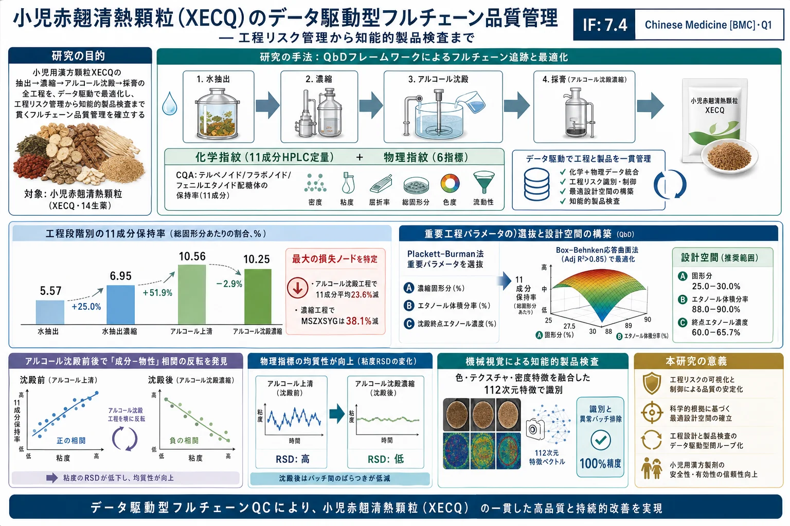

小児赤翹清熱顆粒（XECQ）のデータ駆動型フルチェーン品質管理 — 工程リスク管理から知能的製品検査まで

<!-- 方針: 26ページのQbD/DoE/機械視覚 研究論文の全訳。原文構成(Abstract→Introduction→Materials and methods→Results→Discussion→Conclusion)に忠実。数値・表(Table1-10)は保持。式(2)-(4)は保持率の比。「> 補足:」は訳者注。 -->
書誌情報
- 標題（原題）: Data-driven full-chain quality control for Xiaoer Chiqiao Qingre granules: from process risk management to intelligent product testing
- 著者・所属: Nan Wang, Yukun Chang（共同筆頭）, Yue Cheng, Jing Zhao, Chao Li, Lu Sun, Liang Feng, Yanjun Yang, Xiaobin Jia*（中国薬科大学・江寧中医院ほか／Jumpcan Pharmaceutical・Jichuan Pharmaceutical Group）
- 掲載誌・巻号・DOI: Chinese Medicine (2026) 21:130. https://doi.org/10.1186/s13020-026-01414-z
- インパクトファクター: 7.4（Chinese Medicine [BMC], Q1・最新JCR公表値）。統合・補完医療／薬理・薬学分野の代表誌。
- 受理経過 / ライセンス: Received 2026-02-06 / Accepted 2026-04-27。CC BY 4.0（オープンアクセス、RESEARCH）
- 資金: 江蘇省科技成果転化プログラム(BA2020077)ほか
補足（この論文の位置づけ）: 「単一成分の含量規格」から一歩進んで、製造の全工程（抽出→濃縮→アルコール沈殿→採膏）を通じて“何が・どこで・どれだけ失われ／濃縮されるか”を化学(11成分)と物理(6指標)の両面から動的に追跡し、QbD（Quality by Design）で重要工程を最適化し、最後は機械視覚で製品外観を非破壊検査するという、フルチェーン（全鎖）品質管理の実践例。漢方製剤の製造QC・PAT（工程分析技術）・設計空間・DoE を具体的な数値とともに学べる、実務者向けに極めて有用な論文である。
要旨（Abstract）
背景: 小児赤翹清熱顆粒（Xiaoer Chiqiao Qingre granules, XECQ）は、小児の風熱感冒（かぜ）の治療に広く用いられる漢方（中薬）である。しかし多段階の製造工程がバッチ間の大きなばらつきを生み、品質の一貫性確保が課題となっている。本研究は Quality by Design（QbD）の概念に導かれ、工程解析・パラメータ最適化・知能的モニタリングを組み合わせた統合フレームワークを開発し、バッチ間一貫性と医薬品としての安全性を高めることを目指した。
方法: QbD の枠組みの中で、HPLC による多成分定量・クロマトグラフィー指紋・物理指紋を用いて、抽出・濃縮・アルコール沈殿・採膏（膏の回収）を含む製造全工程にわたり品質を監視した。11 種の活性成分を定量的に特徴づけ、それらと主要な物理化学的性質との関係を解析した。テルペノイド・フラボノイド・フェニルエタノイド配糖体の保持率を重要品質特性（CQA）と定義した。重要工程パラメータは Plackett–Burman 計画で選抜し、アルコール沈殿工程の設計空間は Box–Behnken 応答曲面法で構築した。加えて、粒子外観の迅速・非破壊評価のための機械視覚システムを開発した。
結果: アルコール沈殿は監視した 11 成分の中で最大の損失をもたらし（平均 23.6% 減少）、一方でガロイルペオニフロリン（maackiain-7-O-glucoside と本文表記／MSZXSYG）は濃縮段階で顕著な 38.1% の減少を示した。アルコール沈殿後、フラボノイド・フェニルエタノイド配糖体・テルペノイドの濃縮係数はそれぞれ 1.56・1.53・1.50 であり、保持率と化合物極性の負の相関を示唆した。工程中の成分再分配は粘度の相対標準偏差（RSD）を有意に低下させ、系の均質性向上と成分−物性相関の反転を示した。これら代表成分を CQA として、頑健な回帰モデル（Adj R² > 0.85）を確立し、CQA 保持を最大化しつつバッチ間ばらつきを最小化する設計空間を定義した。さらに機械視覚システムは、識別と異常バッチ排除の両方で 100% の精度を達成した。
結論: 本研究は「工程解析−パラメータ最適化−知能的モニタリング」という総合戦略を提案し、XECQ の品質管理を高める頑健なフレームワークを提供するとともに、漢方（TCM）製造の経験駆動からデータ駆動への移行を後押しする。
キーワード: 小児赤翹清熱顆粒、Quality by design、HPLC 指紋、物理指紋、アルコール沈殿工程の設計空間、機械視覚
序論（Introduction）
漢方複方製剤の品質一貫性は、その近代化・国際化を阻む中核的ボトルネックである。この課題は、生薬原料に固有の複雑さ・変動性と、製造工程における避けがたい変動に由来する。
従来の「試験による品質保証（quality by testing, QbT）」モデルは最終製品の検査に依存し[1,2]、工程パラメータのドリフトや原料変動といった生産中の重要な変動源から生じる品質のゆらぎを能動的に制御できない。その結果、品質規格と臨床効果の間に、埋めがたい系統的な断絶が生じる。したがって、受動的な QbT から能動的な QbD へと品質管理パラダイムを進めることが業界の総意かつ喫緊の必要となっている[3]。QbD の思想は Joseph M. Juran が導入した quality-by-design 概念に起源を持ち[4,5]、後に ICH Q8–Q10 ガイドラインで公式化された。その核心は、目標製品品質プロファイル（QTPP）を体系的に定義し、重要原料特性（CMA）・重要品質特性（CQA）・重要工程パラメータ（CPP）を同定して、頑健な設計空間と管理戦略を確立することにある[6–9]。これは工程分析技術（PAT）を統合しリアルタイムリリースを可能にする科学的枠組みを提供する。
XECQ は 14 種の生薬から構成される。すなわち 黒豆（Glycine max, 9.0%）・連翹（Forsythia suspensa, 12.0%）・薄荷（Mentha canadensis, 6.0%）・甘草（Glycyrrhiza uralensis, 5.0%）・大黄（Rheum palmatum, 5.0%）・荊芥（Nepeta cataria, 6.0%）・炒山梔子（Gardenia jasminoides, 焦, 5.0%）・青蒿（Artemisia caruifolia, 9.0%）・柴胡（Bupleurum chinense, 6.0%）・檳榔（Areca catechu, 4.0%）・厚朴（Magnolia officinalis, 9.0%）・黄芩（Scutellaria baicalensis, 9.0%）・半夏（Pinellia ternata, 9.0%）・赤芍（Paeoniae Radix Rubra, 6.0%） である[10]。祛風・解表・清熱・消積（風を払い、体表の症状を和らげ、熱を清し、停滞を解く）の効能を持ち[11]、臨床では主に小児の急性上気道感染症と手足口病の治療に用いられる[12,13]。
小児薬としての XECQ の品質管理課題は特に深刻で代表的である。効能は実証されているものの、原料と製造工程の複雑さゆえに、品質管理指標が限定的でバッチ間一貫性が乏しいという業界共通の課題を抱える。小児の臓器は発達途上にあり、吸収・分布・代謝・排泄（ADME）が成人と異なるため独自の薬力学的特徴を持つ。多成分の相乗効果は漢方の治療効果の基盤であると同時に、薬物動態相互作用の潜在的リスクを高めうる。この特性ゆえに、小児薬には製剤の一貫性に対してより高い基準が求められる[14,15]。よって QbD 思想に基づく XECQ の頑健な品質管理系の確立は、実際的かつ範例的な価値を持つ。
QbD が体系的な品質管理の枠組みを与える一方、複雑な漢方複方の製造全工程への適用にはなお重大なボトルネックがある。QbD に基づく中成薬の品質管理系は、全工程を通じたリスクベースの戦略を推奨する[16–18]（Figure S1）。この枠組みは QTPP の定義から始まり、CQA の同定を導く[19,20]。リスク評価を通じて CQA が CPP と結びつけられ、実験計画法（DoE）が最適操作範囲を定める設計空間を確立し、最終的に包括的な管理戦略により品質一貫性を保証する[21–23]。これらは「目的定義−リスク管理−空間最適化−戦略実装」という閉ループ管理系を形成する。しかし既存研究の多くは、製造全工程における多成分と主要物性の協同的な進化パターンの動的追跡と定量解析を欠き、「ブラックボックス」問題を未解決のまま残している。工程最適化はしばしば単一・限定的な指標に依存し、複数の活性成分群の全体的な保持効率と相関づけられないため、設計空間の予測性・頑健性が限られる。また最終段の管理は主にオフラインの破壊的試験に依存し、生産中のリアルタイム監視とフィードバック調整が困難であった。
これらの課題に対処するため、本研究は CQA として テルペノイド（ペオニフロリン paeoniflorin、オキシペオニフロリン oxypaeoniflorin、ガロイルペオニフロリン galloylpaeoniflorin、アルビフロリン albiflorin）・フラボノイド（オノニン ononin、ダイジン daidzin、ゲニステイン genistein、ウォゴノシド wogonoside）・フェニルエタノイド配糖体（フォルシチアサイドA forsythoside A、フォルシチアサイドE forsythoside E、サリドロシド salidroside） を選定した[24]。選定は薬理学的関連性・代表性・工程感受性・QbD 指向の多成分管理ロジックの総合的考慮に基づく。第一に、これらは XECQ の主要な生物活性カテゴリ（テルペノイド・フラボノイド・フェニルエタノイド配糖体）を代表し、構成生薬の主要な抗炎症・抗ウイルス成分として広く認識される[25]。第二に、炎症シグナル経路の調節・酸化ストレスの軽減・上皮バリア機能の保護という記録された機序が、小児の風熱感冒と急性上気道感染症の病態と密接に合致し、化学的安定性を臨床効果に結びつける[26]。第三に、これらは多様な物理化学的性質（極性・溶解度・安定性）を持ち、特にアルコール沈殿という重要工程に高感度で、工程による組成再分配と品質変動を効果的に反映する[11]。第四に、複雑な漢方複方の治療効果が単一の優勢成分でなく多成分の相乗に由来することを踏まえ、代表成分群のレベルで CQA を定義することが、より合理的で全体的な管理戦略となる。
本研究は従来の QbD 適用を超え、機序的洞察を明らかにし XECQ 固有の管理戦略を確立する。孤立した段階で化学マーカーと工程パラメータを相関づける先行研究と異なり、製造全鎖にわたって化学成分と物理化学的性質の双方を動的・多次元に追跡した。特に、アルコール沈殿段階で「成分−物性」相関の反転現象を同定し、材料系の再構築が多成分組成とマクロな物理特性の相互作用パターンを根本的に変えることを明らかにした。これは漢方の工程進化における長年の「ブラックボックス」問題を解く新たな機序的証拠を提供する。アルコール沈殿を XECQ の主要な品質損失ノードと認識し、テルペノイド・フラボノイド・フェニルエタノイド配糖体の協同的保持を中心に、この重要工程に特化したデータ駆動の設計空間を構築した。単一指標の最適化でなく、多群保持効率とバッチ間頑健性を統合したモデルにより、経験的パラメータ調整を統計的に検証され機序的に解釈可能な管理戦略へ転換した。さらに品質保証を工程最適化から知能的製品検証へ拡張するため、色・テクスチャ・密度記述子に動的安全区間正規化と Bhattacharyya 類似度指標を統合した 112 次元の特徴融合機械視覚フレームワーク を開発した。この高次元特徴アーキテクチャは、適合／異常バッチのリアルタイム非破壊識別を可能にし、QbD 系のデータ結合型拡張を成す。総じて本研究は、「成分進化−物理化学的再構築−設計空間構築−知能的外観検証」を結ぶ、機序的に解釈可能でデータ駆動の閉ループアーキテクチャを確立する。
材料と方法（Materials and methods）
試薬・薬品
XECQ 製造工程の 15 バッチの中間体（水抽出物・水抽出濃縮物・エタノール沈殿上清・エタノール沈殿濃縮物。それぞれ抽出・濃縮・エタノール沈殿・再濃縮の各段階に対応）を Jichuan Pharmaceutical Group から入手（Batch Nos.: 23110064A–23110204A、いずれも GMP 適合）。XECQ エタノール沈殿濃縮膏（実験室調製、Batch No.: 20241124）、XECQ 参照顆粒（実験室調製、Batch Nos.: 202412011–202412015）。標準品は paeoniflorin（≥98.0%、HR22112B1、Baoji Herbest）、oxypaeoniflorin（≥98.0%）、galloylpaeoniflorin（≥98.0%）、albiflorin（≥95.0%）、ononin（≥98.0%）、daidzin（≥98.0%）、genistein（≥98.0%）、wogonoside（≥98.0%）、forsythoside A（≥98.0%）、forsythoside E（≥95.0%）、salidroside（≥98.0%）（後10品は Chengdu Push Biotechnology）。デキストリン（Nanjing Chemical Reagent）、クロマトグラフィー用リン酸（Shanghai Aladdin）、クロマトグラフィー用メタノール（Tedia）。実験用水は Milli-Q 超純水。
HPLC 定量・指紋分析法
標準液の調製: 各標準品を精密に秤量しメタノールに溶解、5 mL に定容して次の混合標準液を得た——oxypaeoniflorin（YHSYG）256.84、paeoniflorin（SYG）1558.54、galloylpaeoniflorin（MSZXSYG）217.02、albiflorin（SYNZG）584.92、ononin（MBHG）219.54、daidzin（DDG）596.48、genistein（RLMS）208.74、wogonoside（HHQG）395.61、forsythoside A（LQZGA）1188.10、forsythoside E（LQZGE）225.15、salidroside（HJTG）234.43（いずれも μg/mL）。検量線用溶液はメタノール段階希釈で調製し、0.22 µm 膜ろ過後 HPLC 分析（Figure S2）。
補足（成分の略号）: 本文は中国語ピンイン由来の略号を多用する。YHSYG=oxypaeoniflorin（オキシペオニフロリン）、SYG=paeoniflorin（ペオニフロリン＝芍薬苷）、MSZXSYG=galloylpaeoniflorin（ガロイルペオニフロリン）、SYNZG=albiflorin（アルビフロリン＝芍薬内酯苷）、MBHG=ononin（オノニン）、DDG=daidzin（ダイジン＝大豆苷）、RLMS=genistein（ゲニステイン）、HHQG=wogonoside（ウォゴノシド）、LQZGA=forsythoside A（連翹苷A）、LQZGE=forsythoside E、HJTG=salidroside（サリドロシド＝紅景天苷）。
試料液の調製: 水抽出物は超純水で 1:2、水抽出濃縮物は 1:20 に希釈。エタノール沈殿上清は 65% エタノールで 1:2、エタノール沈殿濃縮物は 1:20 に希釈。13,000 rpm・10 分遠心し上清を採取、0.22 µm 膜ろ過後 HPLC 分析（Figure S3）。
クロマトグラフィー条件: Waters Acquity HPLC C18 カラム（4.6 mm × 250 mm, 5 μm）。移動相はメタノール（A）と 0.1% リン酸水溶液（B）。グラジエント: 0–30 min で B を 90→55%（A 10→45%）に直線減少、31–35 min で B 55→39%（A 45→61%）、36–50 min で B 39→35%（A 61→65%）、51–55 min で B を 90% に戻して再平衡化。流速 0.8 mL/min、カラム温度 35 ℃、検出波長 278 nm、注入量 10 μL。この条件でマーカー成分含量の測定と HPLC 指紋構築の両方を行う。
方法バリデーション: 中国薬局方 2020 年版 第四部の通則に従い、定量法の特異性・直線性・精度・繰返し性・安定性・回収率を検証。同時に HPLC 指紋の精度・繰返し性・安定性も評価。
HPLC 指紋の類似度解析: 全バッチのクロマトデータから参照スペクトル（1-124A, 2-124A, 3-124A, 4-124A）を選び、「中薬クロマト指紋類似度評価システム（2012 年版）」で時間窓 0.1 min の平均法により参照スペクトル R を生成。全スペクトルのピークマッチングを行い類似度を算出。
XECQ 中間体の物理指紋
物理特性の測定: 全試料を 25 ℃ で平衡化、超音波 10 分で溶解・均質化。薬局方 2020 年版の通則に従い、比重（SG）・固形分（SC）・pH・粘度（VIS）・電気伝導度（σ）・屈折率（RI）を同時測定。各項目は三重測定（平均）。
物理指紋の構築: 薬局方と文献に基づき各物理特性の数値範囲を定め、測定値を 0–10 に標準化。範囲と変換式は Table 1 のとおり。6 指標の標準化値をすべて 10 に設定して結ぶと正六角形、実測の標準化値を結ぶと不規則六角形となり、これが中間体の物理指紋となる。15 バッチ・各工程段階の物理パラメータを Origin で作図し、直感的評価と類似度評価の両方で解析。各パラメータの段階内・段階間相関を算出しバッチ間・工程間の一貫性と変動を評価。
Table 1. XECQ 重要工程中間体の物理特性の標準化変換法
| 物理特性 | 略号 | 単位 | 数値範囲 | 変換式 |
|---|---|---|---|---|
| 相対密度 | SG | – | 0〜2 | 5x |
| pH | pH | – | 0〜7 | 10x/7 |
| 固形分 | SC | % | 0〜50 | x/5 |
| 粘度 | VIS | mPa·s | 0〜120 | x/12 |
| 電気伝導度 | σ | mS/cm | 0〜20 | x/2 |
| 屈折率 | RI | – | 1〜1.5 | 20(x−1) |
単位総固形分あたりの成分割合: SC・SG と各成分含量を統合し、11 指標成分および各成分群が総固形分に占める割合を算出（式(1)）。相関解析・多変量統計と物理パラメータを組み合わせて解析。
式(1)（重量パーセント %）＝（成分濃度 × 相対密度 × 水の密度）/ 固形分 × 100 …… 各成分の質量が単位総固形分に占める割合を求める（原文の式表記が読み取りづらいため意味に基づき記載）。
アルコール沈殿工程の最適化と設計空間
濃縮膏の調製とアルコール沈殿: 複数バッチをプールして総固形分 37.3%（105 ℃ 恒量乾燥基準）の濃縮膏を得て原料とした。濃縮膏 10 g を精秤し、脱イオン水で所定固形分に調整。十分混合後、Plackett–Burman 計画の流速で所定体積分率のエタノールを機械撹拌下に添加、設定容量到達で停止。所定温度で静置沈降、ろ過して沈殿を 50 ℃・恒量乾燥し秤量。上清は容量測定して以降の試験に供した。評価指標（活性成分保持率・固形分除去率）と潜在的工程リスクの解析は Supplementary S1 に記載。
Plackett–Burman による CPP 選抜: Design Expert 11.0 を用い、CQA としてフェニルエタノイド配糖体保持率（Y1）・テルペノイド保持率（Y2）・フラボノイド保持率（Y3）・固形分除去率（Y4）を設定。因子は 濃縮固形分（A）・エタノール体積分率（B）・沈殿終点エタノール濃度（C）・エタノール添加流速（D）・撹拌速度（E）・静置温度（F）・静置時間（G）。水準は Table 2。
Table 2. Plackett–Burman 計画の因子と水準
| 因子 | 低水準(−1) | 高水準(+1) |
|---|---|---|
| A: 濃縮膏の固形分（%） | 20 | 30 |
| B: エタノール体積分率（%） | 85 | 95 |
| C: 沈殿終点エタノール濃度（%） | 60 | 70 |
| D: エタノール添加流速（mL/min） | 20 | 60 |
| E: 撹拌速度（r/min） | 320 | 640 |
| F: 静置温度（℃） | 4 | 25 |
| G: 静置時間（h） | 12 | 24 |
Box–Behnken 応答曲面（BBD）: Design Expert 11.0 で 3 因子 3 水準 BBD を設定。CQA は Y1（フェニルエタノイド配糖体保持率）・Y2（テルペノイド保持率）・Y3（フラボノイド保持率）・Y4（固形分除去率）、変数は 濃縮固形分（A）・エタノール体積分率（B）・沈殿終点エタノール濃度（C）。エタノール添加流速 20 mL/min・撹拌 320 r/min・温度 4 ℃・時間 24 h・添加後 5 分撹拌に固定。水準は Table 3。
Table 3. Box–Behnken 計画の因子と水準
| 因子 | 低(−1) | 中(0) | 高(+1) |
|---|---|---|---|
| A: 濃縮膏の固形分（%） | 20 | 25 | 30 |
| B: エタノール体積分率（%） | 85 | 90 | 95 |
| C: 沈殿終点エタノール濃度（%） | 60 | 65 | 70 |
応答曲面モデル化: 各保持率・固形分除去率は次式で算出——
- 式(2) Y1（テルペノイド保持率）＝ アルコール沈殿上清中のテルペノイド含量 / 濃縮膏中のテルペノイド含量 × 100%
- 式(3) Y2（フラボノイド保持率）＝ 上清中フラボノイド / 濃縮膏中フラボノイド × 100%
- 式(4) Y3（フェニルエタノイド配糖体保持率）＝ 上清中配糖体 / 濃縮膏中配糖体 × 100%
- 式(5) Y4（固形分除去率）＝ アルコール沈殿後に沈殿した総固形分 / 濃縮膏中の総固形分 × 100%（意味に基づく記載）
一般線形回帰＋ステップワイズ回帰で工程パラメータの影響を評価（式(6): Y = a0 + Σaᵢxᵢ、a0 は定数、aᵢ は回帰係数、xᵢ は工程パラメータ）。まず各因子の独立効果を評価して予備選抜し、最終的な工程空間最適化・予測モデルには線形・交互作用・二次項を含む簡略化立方モデルを基本形とし、ステップワイズ回帰で CQA（Y1–Y4）と CPP（A, B, C）を当てはめ。Adj R²・予測 R²・AIC/BIC で最適簡略モデルを選択。200 回の並べ替え検定で過学習を評価。
機械視覚による粒子品質一貫性評価
画像取得系: デジタルカメラ・LED ライトパネル・密閉チャンバー・高さ調整式試料台からなる取得部（Fig. 1）と、MATLAB 2021b を搭載した高性能 PC の処理部で構成。
画像処理・品質評価ワークフロー: データ層・処理層・出力層の 3 モジュール。標準粒子画像（G1–G11）を品質基準確立の学習セット、独立標準粒子（G12–G14）と参照粒子（RG1–RG5）を性能検証の試験セットとする。全画像は均一な照明・解像度・形式（JPG）で取得。処理層では前処理で各生画像から標準化サブ領域（400 × 400 px）を 5 つ自動抽出、コア処理では色（LAB 空間）・テクスチャ・形態特徴を統合した多次元アプローチで高次元特徴ベクトルを抽出（詳細は Supplementary S2）。出力層は各試料の定量特徴と品質判定を「Accept／Review／Reject」の 3 段階で出力。
統計解析: HPLC 指紋類似度は前述の評価システム（2012 版）、アルコール沈殿最適化・設計空間は Design Expert 11.0、製品品質評価は自作の粒状機械視覚系。Pearson 相関は SPSS 22.0、PCA は Origin 2023、OPLS-DA は SIMCA 14.1。200 回並べ替え検定（P < 0.05）でモデル頑健性を確認後、VIP > 1 の閾値で主要差異変数を抽出。
結果（Results）
HPLC 法バリデーションと中間体品質解析
方法バリデーション: 特異性試験では 11 標的成分が水抽出物・水抽出濃縮物・エタノール沈殿上清・エタノール沈殿濃縮物のいずれでも対応ピークを示し、ブランク溶媒（超純水・65% エタノール・メタノール）に干渉なし。混合標準液の 2〜64 倍段階希釈で全成分が優れた直線性（r ≥ 0.999、Table S1）。良好な繰返し性（n=6）・装置精度（n=6）・24 h 溶液安定性（n=7）を示し、ピーク面積 RSD ≤ 3.00%（Table S2）。添加回収試験では 11 成分の平均回収率 95.10〜103.37%、RSD ≤ 3.64%。最低濃度の混合標準を希釈・10 μL 注入し、S/N≈3 で LOD、S/N≈10 で LOQ を算出（Table S3、単位 μg/mL）:
| 成分（略号） | LOD | LOQ |
|---|---|---|
| salidroside（HJTG） | 0.6456 | 2.2098 |
| forsythoside E（LQZGE） | 0.6541 | 1.9146 |
| oxypaeoniflorin（YHSYG） | 0.6742 | 0.9302 |
| albiflorin（SYNZG） | 0.7048 | 11.6619 |
| paeoniflorin（SYG） | 0.8747 | 8.2795 |
| daidzin（DDG） | 0.6242 | 0.3338 |
| galloylpaeoniflorin（MSZXSYG） | 0.6073 | 0.6760 |
| forsythoside A（LQZGA） | 0.4887 | 0.5208 |
| ononin（MBHG） | 0.5226 | 0.3223 |
| wogonoside（HHQG） | 0.0301 | 0.1400 |
| genistein（RLMS） | 0.0555 | 0.1947 |
補足: 一部成分で LOQ が LOD より小さい値が示されているが、原文（Table S3）の記載どおりに転記した（原データの数値。読者は原文参照）。
本法は強い特異性・優れた直線性・高い精度と正確性・良好な溶液安定性を示し、XECQ 中間体および完成品の標的成分定量に適する。
含量測定: 15 バッチの水抽出物（Table S5）・水抽出濃縮物（Table S6）・アルコール沈殿上清（Table S7）・アルコール沈殿濃縮物（Table S8）について各成分含量を測定し、以降の研究の基礎とした。
HPLC 指紋法のバリデーションと類似度評価
繰返し性・精度・24 h 安定性を forsythoside A を内部参照ピークとして評価。バッチ 23110064A のエタノール沈殿濃縮物から 6 試料を調製し、相対保持時間 RSD 0.01〜0.09%・相対ピーク面積 RSD 0.29〜1.94%（良好な繰返し性）。試料 4-064A を 6 連続注入し RRT RSD 0.01〜0.04%・RPA RSD 0.19〜2.89%、6 注入の類似度はすべて 1.000（優れた装置精度）。同試料を 0・2・4・8・10・12・24 h で分析し RRT RSD 0.01〜0.11%・RPA RSD 0.11〜3.84%（24 h 安定）。
15 バッチ・4 段階の指紋と参照クロマトを構築（Fig. 2。水抽出 1-064A〜1-204A、水抽出濃縮 2-064A〜2-204A、アルコール上清 3-064A〜3-204A、アルコール沈殿濃縮 4-064A〜4-204A）。全共通ピークの RRT の RSD < 1%（Table 4、極めて一貫した分離挙動）。水抽出濃縮・上清・沈殿濃縮は高いバッチ間類似度を示し、これら段階の製品一貫性は良好。ただし水抽出段階の 3 バッチ（084A・134A・164A）は参照クロマトとの類似度がやや低く（<0.960）、出発原料のばらつきを示唆。工程が進むと中間体の類似度は顕著に改善し、製造工程が原料変動を効果的に均質化することを示した。184A・194A・204A は後段でおおむね許容水準（値はわずかに 0.990 未満）を維持した。
物理特性の測定と物理指紋の構築
15 バッチ・4 段階で 6 物理パラメータ（SC・SG・pH・σ・RI・VIS）を測定（Fig. 3A–F）。SG は 2 重、他は 3 重測定。各段階の並行測定 RSD はすべて 3% 未満（良好な精度）。バッチ間変動では SG と σ の全体 RSD が一貫して 1% 未満（高安定）、一方 SC・RI・VIS は段階依存の変動を示し、特に水抽出濃縮物が VIS・σ・SC で相対的に大きく変動——濃縮工程が系の物理化学的状態を大きく変えることを示唆。もっとも、上清と沈殿濃縮物では物理パラメータが再収束し、アルコール沈殿後の系の再構築と安定化を示した。
物理指紋（Fig. 4A–E）と類似度（Fig. 4F–I）: 4 段階で pH は「増→減」、他は「増→減→増」の傾向。水抽出・上清・沈殿濃縮は各指標の分布が比較的集中、水抽出濃縮は VIS・σ・SC が変動（特に VIS が顕著、最高 144A・最低 124A）。類似度解析では、水抽出濃縮段階でバッチ 114A・124A・144A・154A・174A が他の 5 バッチ以上と類似度 0.800 未満で主群から逸脱。特に 144A と 114A・124A・154A の類似度はそれぞれ 0.500・0.700 を下回る一方、144A と 174A は 0.9776 と高い。これらは相対密度・固形分・粘度・屈折率・伝導度で大きく変動し、15 バッチ中の周縁群を形成しうる。
HPLC・物理指紋に基づく品質移行の相関研究
11 成分の単位固形分あたり割合（Fig. 5、Table 5）: 水抽出・水抽出濃縮・アルコール上清・アルコール沈殿濃縮で、11 成分の単位総固形分あたり割合はそれぞれ 5.57%・6.95%・10.56%・10.25%。3 成分カテゴリ（フラボノイド:フェニルエタノイド配糖体:テルペノイド）の比は、水抽出の 1.0:1.9:4.2 から水抽出濃縮の 1.0:2.3:3.5 へ移行後に安定。水抽出→水抽出濃縮でテルペノイド（YHSYG・SYNZG・SYG・MSZXSYG）割合が減少、フェニルエタノイド配糖体（LQZGE・LQZGA・HJTG）割合が増加、フラボノイド（RLMS・MBHG・HHQG・DDG）はわずかに上昇。
水抽出→アルコール沈殿濃縮の全工程で、MBHG と YHSYG を除く全指標成分の単位固形分割合が増加傾向（アルコール沈殿による効果的な不純物除去を示す）。MBHG 割合の低下は精製中の顕著な損失、YHSYG のほぼ不変は損失率が不純物除去率と同程度であることを示唆。濃縮段階での MBHG・YHSYG の低下と採膏段階での多くの活性成分・総活性成分の減少は、濃縮工程が活性成分損失の要因を含みうることを示す。
アルコール沈殿による濃縮: フラボノイド・フェニルエタノイド配糖体・テルペノイドの単位固形分含量は沈殿前のそれぞれ 1.56・1.53・1.50 倍 に増加。沈殿が指標成分の純度を効果的に高め、倍率が 3 成分クラスの極性と逆相関することを示す。
成分含量と物理パラメータの相関（Fig. 6）: アルコール沈殿後、4 成分（第1群: HJTG・LQZGA・LQZGE・DDG）と 3 成分（第2群: HHQG・RLMS・SYNZG）の間に負の相関、各群内では正の相関。第1群は pH とわずかに正相関、第2群はわずかに負相関。群内正相関は同カテゴリ成分が類似の化学的性質を持ち同一工程条件に同調的に応答することを、群間負相関は工程選択性による相互排他的挙動を示唆し、関連工程の調節で複数成分の収率バランスを取りうることを示す。paeoniflorin はおおむね第1群、ononin は第2群に随伴。濃縮段階後、daidzein を含む 8 成分で強い工程間移行の正相関（高い移行安定性）、一方 MBHG・MSZXSYG・YHSYG の負／弱い移行相関は成分変換・損失を反映しうる。
多変量統計: PCA は 17 変数から 3 主成分を抽出し累積寄与率 97.63%。pH・SG・SC が段階間のバッチ変動の主要寄与因子。Hotelling's T² で全段階試料が 95% 信頼限界内。PCA スコアプロット（Fig. 7A）は 4 段階でクラス内凝集・工程間分離を明示。OPLS-DA は R²X=0.992・R²Y=0.64・Q²=0.63（いずれ >0.5、信頼できる説明・予測能）。スコアプロット（Fig. 7B）は 4 段階の明瞭な分離。VIP > 1.0 の 6 指標（SYG・LQZGA・LQZGE・SYNZG・DDG・VIS）を品質判別マーカーに選定（Fig. 7C）、うち SYG・LQZGA は主要バイオマーカー（VIP > 2）。200 回並べ替え検定で Q² 回帰直線の Y 切片 < 0（過学習なし、Fig. 7D）。
アルコール沈殿工程の最適化と設計空間
CPP 選抜（PB）: ステップワイズ回帰で確立した交互作用二項モデルは 4 応答すべてで優れた予測能を示し、Adj R² は Y1=0.9971・Y2=0.9542・Y3=0.9699・Y4=0.9326（Table 6, Table S9）。ANOVA（Table 7）では、濃縮固形分（A）が最も強い正効果（P<0.01）、次いで沈殿終点エタノール濃度（C）・エタノール体積分率（B）。多数の交互作用（AC・AD 等）も有意。有意因子の偏回帰係数絶対値の比較から、A・B・C を後続 BBD 最適化の重要工程パラメータとして選定。
Table 6. Plackett–Burman 線形回帰結果（Adj R² と F 値）
| モデル | Y1 Adj R² / F | Y2 Adj R² / F | Y3 Adj R² / F | Y4 Adj R² / F |
|---|---|---|---|---|
| 線形 | 0.7102 / 4.85 | 0.5784 / 3.16 | 0.7231 / 5.1 | 0.8046 / 7.47 |
| 簡略線形 | 0.8234 / 13.82 | 0.5418 / 5.34 | 0.6958 / 9.39 | 0.773 / 10.37 |
| 簡略 2FI | 0.9971 / 415.81 | 0.9542 / 33.72 | 0.9699 / 45.32 | 0.9326 / 26.37 |
Table 7. ステップワイズ回帰の係数と ANOVA（P値） （\P<0.05, \\*P<0.01）
| 項 | Y1 係数 (P) | Y2 係数 (P) | Y3 係数 (P) | Y4 係数 (P) | 偏回帰係数絶対値の和 |
|---|---|---|---|---|---|
| A | 2.568 (0.001\\) | 3.444 (0.001\\) | 3.361 (0.002\\) | 0.371 (0.000\\) | 9.743 |
| B | 0.471 (0.008\\) | −0.145 (0.054) | 0.079 (0.006\\) | −0.402 (0.008\\) | 1.097 |
| C | −0.019 (0.001\\) | 1.296 (0.003\\) | 0.945 (0.079) | 0.249 (0.002\\) | 2.509 |
| D | −0.243 (0.455) | −0.181 (0.020\*) | 0.031 (0.043\*) | – | 0.455 |
| E | – | – | – | −0.107 (0.217) | 0.107 |
| F | 0.127 (0.005\\) | −0.171 (0.003\\) | −0.338 (0.004\\) | – | 0.636 |
| G | – | – | – | 0.119 (0.017\*) | 0.119 |
| AB | −0.025 (0.011\*) | – | −0.012 (0.190) | – | 0.037 |
| AC | −0.014 (0.032\*) | −0.065 (0.005\\) | −0.041 (0.011\*) | – | 0.120 |
| AD | 0.010 (0.004\\) | 0.009 (0.033\*) | – | – | 0.019 |
| AF | −0.008 (0.020\*) | – | 0.008 (0.089) | – | 0.016 |
| BE | – | – | – | 0.001 (0.010\*) | 0.001 |
| Adj R² | 0.9971 | 0.9542 | 0.9699 | 0.9326 | – |
BBD による数理モデル: ステップワイズ回帰で Y1・Y2・Y3 の簡略立方モデルと Y4 の簡略二次モデルを確立。ANOVA で全モデルが高度に有意（P<0.05）・不適合項は非有意（P>0.05）（Table S10）。各モデルの Adj R² は 0.85 超（Table 8）で良好な適合・強い予測能。
**Table 8. 保持率・固形分除去率モデルの回帰結果（係数と P値、\P<0.05, \\*P<0.01）**
| 項 | Y1 係数 (P) | Y2 係数 (P) | Y3 係数 (P) | Y4 係数 (P) |
|---|---|---|---|---|
| 定数 | 8076.985 | 5853.224 | 3600.731 | −137.112 |
| A | 62.954 (0.9469) | −222.721 (0.0021\\) | 7.726 (0.5112) | −0.783 (<0.0001\\) |
| B | −259.720 (0.0010\\) | −146.667 (0.9195) | −46.684 (0.0148\*) | 3.614 (<0.0001\\) |
| C | −35.991 (0.3222) | 20.133 (0.0015\\) | −107.944 (0.0031\\) | −0.196 (<0.0001\\) |
| AB | – | 6.075 (0.3474) | – | – |
| AC | −1.788 (0.0008\\) | −1.174 (0.0098\\) | −0.104 (<0.0001\\) | 0.018 (0.0878) |
| BC | 3.221 (0.0068\\) | −0.057 (0.0314\*) | 1.331 (0.0029\\) | – |
| A² | −0.041 (0.0163\*) | −0.289 (0.0352\*) | −0.019 (0.1108) | – |
| B² | 1.690 (0.0097\\) | 0.792 (0.1003) | 0.027 (0.0392\*) | −0.019 (0.0740) |
| C² | −1.245 (0.0330\*) | – | 0.882 (0.0002\\) | – |
| A²B | – | −0.013 (0.0579) | – | – |
| AB² | – | −0.030 (0.0025\\) | – | – |
| AC² | 0.013 (0.0113\*) | – | – | – |
| A²C | – | 0.022 (0.0097\\) | – | – |
| B²C | −0.025 (0.0007\\) | – | – | – |
| BC² | 0.010 (0.0328\*) | – | −0.011 (0.0105\*) | – |
| 全体モデル | 0.0011\\ | 0.0072\\ | <0.0001\\ | <0.0001\\ |
| 不適合 | 0.6115 | 0.6321 | 0.6474 | 5.8100 |
| Adj R² | 0.9446 | 0.8786 | 0.9481 | 0.9411 |
応答曲面（Fig. 8A–L）は複雑な交互作用を示した。テルペノイド保持率（Y1）は終点エタノール濃度 ≥65% で低体積分率のとき増加、低終点濃度では体積分率増で「増→減」。固形分増は保持を高めるが、ある終点濃度を超えると効果は頭打ち・逆に低下も。フラボノイド（Y2）は低終点濃度・高固形分で増加、高エタノールで低下。フェニルエタノイド配糖体（Y3）は低体積分率で増加。固形分除去率（Y4）は 3 パラメータすべてと正相関。
設計空間の構築: BBD に基づき CQA の最低許容基準を設定（Table 9）。多指標重ね合わせ＋95% 予測区間で頑健操作範囲を定義。固形分 20.0% では適切な空間が形成できず、管理範囲を 25.0–30.0% とした。不規則な空間を 25.0–30.0% で重ね合わせて実用の矩形領域（Fig. 8P）とし、これを XECQ エタノール沈殿工程の設計空間 と定義: 濃縮固形分 25.0–30.0%・エタノール体積分率 88.0–90.0%・沈殿終点エタノール濃度 60.0–65.7%。
Table 9. 活性成分保持率・固形分除去率の管理下限
| 指標 | 目標管理下限（%） |
|---|---|
| テルペノイド保持率 | 84.0 |
| フラボノイド保持率 | 92.0 |
| フェニルエタノイド配糖体保持率 | 90.0 |
| 固形分除去率 | 32.0 |
管理空間の検証（Table 10）: 空間内 T1–T3（A=30.0%・B=90.0%・C=60.0%）では沈殿後応答の RSD が 1.622%・1.028%・1.332%・3.086%。空間外 T4–T6 は管理目標を満たさず、定義した管理空間の予測能が良好であることを確認。
Table 10. 設計空間の検証点（内側 T1–T3／外側 T4–T6）
| 検証点 | A(%) | B(%) | C(%) | Y1(%) | Y2(%) | Y3(%) | Y4(%) |
|---|---|---|---|---|---|---|---|
| 内 T1 | 30 | 90 | 60 | 90.322 | 95.768 | 93.313 | 38.358 |
| 内 T2 | 30 | 90 | 60 | 90.150 | 96.442 | 93.446 | 36.107 |
| 内 T3 | 30 | 90 | 60 | 87.729 | 94.506 | 91.244 | 36.869 |
| 外 T4 | 25 | 85 | 60 | 88.991 | 96.075 | 93.988 | 31.842 |
| 外 T5 | 30 | 95 | 70 | 82.719 | 88.892 | 88.631 | 40.294 |
| 外 T6 | 20 | 90 | 60 | 86.282 | 92.049 | 89.124 | 32.241 |
機械視覚による品質一貫性評価
色特徴: 標準粒子（G1–G14）・参照粒子（RG1–RG5）の中央サブ画像を RGB→Lab に変換し輝度（L）と色度（a, b）を分離。a/b の色度分布は標準粒子と参照粒子で明瞭に異なり、標準粒子はバッチ間で集中・一貫、参照粒子は変動大（Fig. 9B–D）。ヒストグラムのビニング損失を避けるため色投影で次元削減し点群可視化（Fig. 9E）——標準・学習セットは類似の凝集、参照は分散・外れ値多数。色距離ヒートマップ（Fig. 9F）は標準間が白（変動小）、参照−標準間が赤（差大）。
テクスチャ・密度特徴: 灰度共起行列（GLCM）で contrast・correlation・energy・homogeneity を定量。標準粒子のヒートマップは対角に沿った紡錘状の高確率分布（隣接画素の灰度が近く、表面反射・粒径分布が一定、Table S11）、参照粒子は明瞭なシフト・分散（Fig. 10A, B）。適応二値化＋分水嶺で中央サブ画像を分割し、粒子密度・数・平均面積・面積標準偏差を定量、標準と参照で有意差（Fig. 10C, Table S12）。
多次元特徴融合の品質評価系: 学習画像（trained_params.mat）で基準を確立し試験セットを評価、特徴行列（feature_matrix.xlsx）と品質報告（quality_report.xlsx）を生成。標準試料のうち G12_3.jpg・G13_5.jpg は総得点が 85 ≤ Stotal < 95 に入り「Review」（G12_3 は色ヒストグラム／色統計が同バッチ内で低く、顆粒抽出物と賦形剤の混合が不均一な可能性、G13_5 はテクスチャ統合スコア異常＝粒径分布不均一の可能性）。参照粒子はすべて「Reject」。RG4_5 は総得点が低いが Mahalanobis 距離スコア 0.968（特徴ベクトル分布が学習セットと整合し共分散構造が類似するため、生の特徴値が大きく異なっても Mahalanobis 距離は近い）。重み付けスコア＋Mahalanobis 距離の異常検知で正確な品質判定を実現し、従来の粉体試験に比べ外観評価の効率を大幅に改善。
考察（Discussion）
漢方複方の品質一貫性管理は、近代化・国際化を制約する鍵となるボトルネックである。本研究は深層機械学習・QbD 駆動の工程最適化・機械視覚によるオンライン監視を統合した XECQ の品質管理系を確立し、複雑な漢方系の「ブラックボックス」を理論から実践へと橋渡しする、拡張可能でデータ駆動のフレームワークと研究パラダイムを提供する。
多次元解析により、前処理における「成分と物性」の協同的共進化の動的機序を初めて明らかにした。水抽出・濃縮段階では、テルペノイドが熱感受性ゆえに割合を有意に減じる一方、フラボノイドとフェニルエタノイド配糖体は高い熱安定性・溶解度ゆえに相対的に濃縮された。これは極性差だけに基づく従来解釈を拡張し、熱感受性・溶解度といった性質の重要性を示す。さらに重要なのは、アルコール沈殿の前後で「成分−物性」相関の反転を見いだした点である。機序的には、高濃度エタノールの導入が媒質の誘電率を下げ、親水性高分子（多糖・タンパク等）の水和層を弱め凝集・沈殿を促す。これら高分子コロイド成分は水素結合・鎖の絡み合い・保水を通じて粘度の主要因であるため、その除去が系の構造粘度を大きく低下させる。同時に、極性低下条件下での溶解度差により低分子成分（フラボノイド・フェニルエタノイド配糖体・テルペノイド）が再分配され、より極性の高い成分が上清に、溶けにくい・弱極性の成分が高分子マトリクスと共沈しうる。この選択的分配が高分子と低分子の組成バランスを再編し、分子間相互作用パターン（水素結合・π–π スタッキング・疎水性相互作用）を変える。結果として物性の支配因子が「高分子ネットワーク構造」から「残存する低分子の相対割合と相互作用状態」へ移行する。
したがって観察された相関の「反転」は、系の構造階層の遷移を反映する——沈殿前は粘度等が高分子コロイドネットワークに支配され、沈殿後は残存可溶画分の組成・相互作用状態により強く影響される。要するにアルコール沈殿は単なる不純物除去でなく物理化学的再編成であり、製剤内部の相互作用トポロジーを再構築する。これが、成分再分配が粘度 RSD を下げ（均質化）つつ相関の向き・強さをも変えた理由を説明する。すなわち漢方製剤のマクロ物性は個々の成分特性の単純和でなく全成分の複雑な相互作用であり、工程パラメータの調整は非線形に物性へ影響する。この機序は、測定容易な物理指標から測定困難な化学的品質特性を間接予測する科学的根拠を与え、漢方製造への PAT 応用の理論的基盤を築く。
以上を踏まえ、本研究は QbD を重要工程であるアルコール沈殿に適用した[27]。原料生薬の固有の変動ゆえ、従来の固定パラメータ工程は安定生産と製品一貫性を保証しにくい。多目的応答曲面モデル化により濃縮固形分・エタノール体積分率・沈殿終点エタノール濃度の複雑な交互作用を解明し、単一パラメータ設定に代わる設計空間を確立。これは原料変動への適応性を大きく高め、漢方生産を「経験駆動」から「データ駆動」へ推し進め、効率的な不純物除去と有効成分保持というトレードオフをバランスよく両立してリアルタイムリリースへの道を拓く。
化学的品質検査の遅延に対処するため、機械視覚に基づく知能検査系を開発した。112 の形態・テクスチャ特徴を抽出し Mahalanobis 距離で異常検知することで、人間の目に感知しがたい微細欠陥まで多スケールに定量評価できる。QbD が工程設計で品質を能動保証し、機械視覚が製品段階で迅速・非破壊の最終検査・格付けを行う閉ループ品質管理を形成。検査時間を数時間からリアルタイムへ短縮し、逐一の非破壊オンライン検査を可能にして、従来の破壊的抜取りの統計的限界を克服する。
限界と展望: 抽出〜採膏の全工程で成分・物性の移行を解析したが、現行戦略はアルコール沈殿以降の精密最適化が中心で、前段の抽出工程のオンライン・リアルタイム監視と閉ループ制御は未確立。今後、近赤外分光（NIRS）等の PAT で抽出中間体の CQA をリアルタイム監視し、モデル予測制御（MPC）と組み合わせて「静的設計空間」から「動的リアルタイム制御」へ移行し、原料から完成品までの全工程知能的品質管理を実現しうる。機械視覚では畳み込みニューラルネットワーク（CNN）による高次元特徴の自律抽出とマルチスペクトル画像を組み合わせ、外観形態と内部化学組成の定量的構造活性相関を確立することが、識別能・解釈性の鍵となる方向である。
結論（Conclusion）
本研究は、多次元品質移行解析・QbD 工程最適化・知能的機械視覚監視を統合し、包括的でデータ駆動の品質管理フレームワークを確立した。XECQ における組成と物性の動的結合を解明し、重要工程であるアルコール沈殿に頑健な設計空間を確立し、さらにリアルタイム品質監視のための非破壊機械視覚系を開発した。中核的革新は、生産前のパラメータ最適化と生産後の知能的品質検査を協同的に閉ループ化した点にあり、複雑な天然物製剤の品質一貫性課題に新たなパラダイムを提供し、漢方製造の知能化を推進する。
訳者補足（実務者向けの読みどころ）
以下は原文に無い、実務観点の補足である（本文の訳と混ぜない）。
- 「フルチェーン（全鎖）QC」の要点: 最終製品だけを検査する QbT でなく、抽出→濃縮→アルコール沈殿→採膏の各段で「化学（11成分HPLC）」と「物理（比重・固形分・pH・粘度・伝導度・屈折率の6指標）」を並行測定し、どこで何が失われ・濃縮されるかを可視化する。アルコール沈殿が最大の損失ノード（平均23.6%減）、濃縮でガロイルペオニフロリンが38.1%減、という具体的な損失マップは、自社工程のどこを重点管理すべきかを考える良い雛形になる。
- 設計空間の実務的な使い方: PB でスクリーニング（多因子から重要な A・B・C を絞る）→ BBD 応答曲面で 3 因子を精密化 → 複数 CQA の許容下限（Table 9）を満たす領域を重ね合わせて矩形の操作範囲（固形分25-30%・エタノール88-90%・終点60.0-65.7%）に落とす、という流れは、そのまま自社の造粒・沈殿・濃縮工程に転用できる。固形分20%では成立する空間が無かった＝下限側の制約も定量的に示している点が実務的。
- 「成分−物性の相関反転」の含意: 粘度などの測りやすい物理量から、測りにくい化学的品質を間接予測できる可能性を示す。これは NIR 等の PAT を導入する際の理屈づけ（なぜ物理指標で品質が読めるのか）になる。
- 機械視覚（外観の非破壊検査）: 色（Lab）＋テクスチャ（GLCM）＋密度の112次元特徴＋Mahalanobis距離で「Accept／Review／Reject」を自動判定。破壊試験の抜取り統計の限界を超え、全数・リアルタイム検査に近づける発想は、顆粒・錠剤の外観 QC の将来像として参考になる。
- 用語: QbD=Quality by Design（設計段階から品質を作り込む）、QbT=Quality by Testing（最終検査依存）、CQA=重要品質特性、CPP=重要工程パラメータ、QTPP=目標製品品質プロファイル、DoE=実験計画法、PB=Plackett–Burman（スクリーニング計画）、BBD=Box–Behnken（応答曲面計画）、PAT=工程分析技術、NIRS=近赤外分光、MPC=モデル予測制御、GLCM=灰度共起行列。